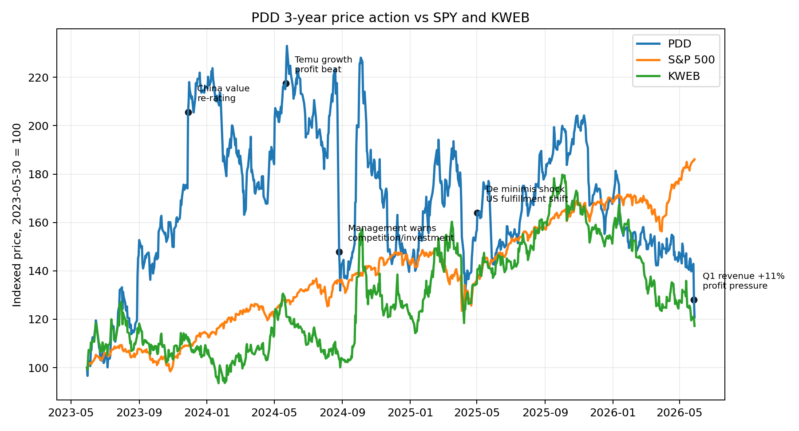
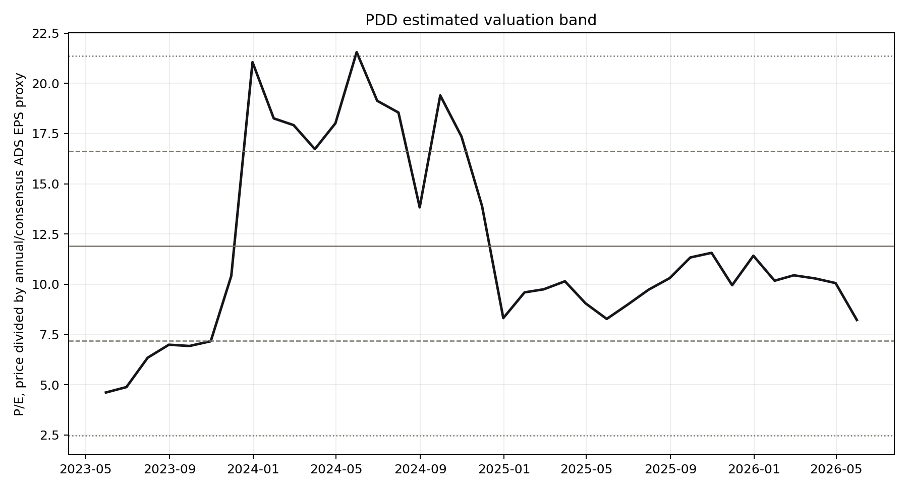
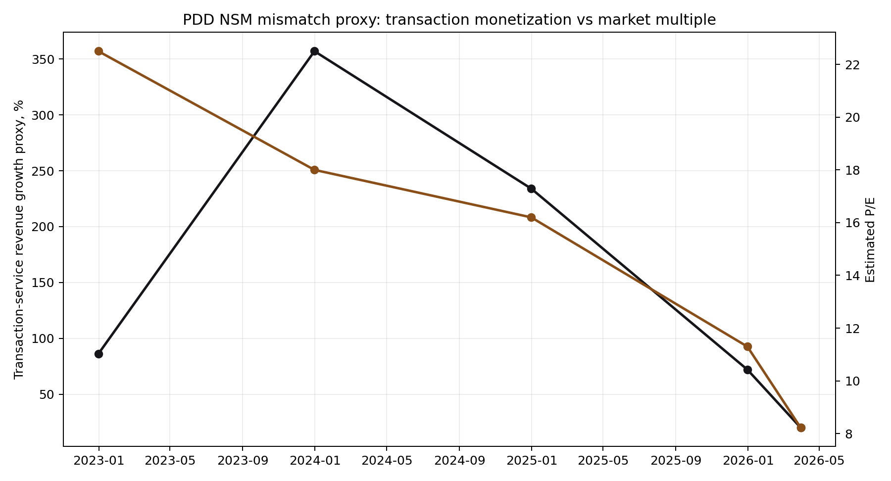

Ticker: PDD
Date: 2026-05-28
Classification: Advance to next-stage research
结论：值得进入下一阶段研究，但不是“便宜就买”的简单故事。 PDD 当前价格约 US$81.8，已接近 52 周低点；按 yfinance/OpenBB 口径，市值约 US$116bn、企业价值约 US$55bn，公司账上现金、现金等价物和短期投资达 RMB436.1bn。估值已经在用“Temu 模式被关税和合规永久削弱、国内拼多多广告/佣金增长降速、管理层长期补贴摧毁利润率”的锚定框架定价。
这可能是一个真实的错锚机会：市场盯的是季度 non-GAAP EPS、营销服务增速和 Temu 外部冲击；管理层真正押注的是商家成本下降、供应链能力、履约本地化和合规化之后的长期价值捕获。Q1 2026 收入仍增长 11%、交易服务增长 20%，但 non-GAAP 净利润下降 17%，说明“增长还在、利润被重新投入”的矛盾正在放大。5 月 28 日欧盟对 Temu 开出 €200mn DSA 罚款，又把合规风险推到台前；这反而提供了清晰验证路径：Temu 能否用更重的供应链和本地履约，把低价流量生意升级为可监管、可留存、可盈利的平台。
| Item | Latest Situation |
|---|---|
| Market Data & Positioning | 2026-05-28 盘中约 US$81.8；52 周区间约 US$81.6-139.4；市值约 US$116bn；EV 约 US$55bn。股价在 5 月 27 日 Q1 财报后跳空下跌，5 月 28 日继续创 52 周低点附近。 |
| Key Financial Metrics | Q1 2026 收入 RMB106.2bn，同比增长 11%；交易服务 RMB56.3bn，同比增长 20%；在线营销 RMB49.9bn，基本持平；经营利润 RMB19.6bn，同比增长 22%；non-GAAP 净利润 RMB14.1bn，同比下降 17%；经营现金流 RMB16.4bn。 |
| Price Action & Technicals | 90 日技术层面已转弱：最新收盘/盘中价低于 EMA12、EMA26、EMA50；RSI 约 28，进入超卖区；MACD 柱显著转负。技术含义不是“立刻反弹”，而是市场正在用业绩和监管事件重新砍估值。 |
| Positioning | short percent of float 约 3.7%，机构持有约 31.7%。空头不是极端拥挤，说明反身性机会主要来自基本面预期修复，而不是单纯 short squeeze。 |
| Key Metric | Value | Implication |
|---|---|---|
| TTM P/E | 约 8.1-8.4x | 市场对利润质量和可持续性打重折；若利润只是投资周期而非永久损毁，重估空间大。 |
| Cash + ST investments | RMB436.1bn | 现金相对市值极高，提供安全垫，但也会被治理、资本回报和中国 ADR 风险折价。 |
| Q1 transaction services growth | +20% YoY | Temu/交易服务仍是增长核心；关键是该增长能否在关税和 DSA 合规成本后保持正单位经济。 |
Pricing Anchor & Embedded Expectations: 卖方仍多用 SOTP：国内拼多多约 10x FY26 P/E，Temu 用 P/E 或 P/S 单独估值，再加净现金；高盛 TP US$158，野村 US$136，Bernstein US$132，UBS US$198，Jefferies US$146。但当前市场价格更像是在给 Temu 接近零或深折价价值、对净现金打折，并把国内核心业务按低个位数至中个位数隐含倍数定价。市场共识 NSM 已从“交易服务高速增长”切换到“利润率/合规成本是否可控”。
Peer Benchmarking: PDD 与 JD/BABA 的估值都受中国资产折价影响，但 PDD 的现金密度、利润率和交易服务增速更突出；与 AMZN/MELI 相比，PDD 的估值折价极大，合理部分来自治理、监管、披露和 Temu 模型不确定性。
| Company | Market Cap | Forward P/E | TTM P/E | Revenue Growth | Margin / FCF |
|---|---|---|---|---|---|
| PDD | US$116bn | 6.0x | 8.4x | 11% | net margin 21.6%; P/FCF ~7.3x |
| BABA | US$299bn | 13.6x | 19.3x | 2.9% | net margin 10.1%; FCF pressured by capex |
| JD | US$39bn | 6.6x | 21.2x | 4.9% | net margin 1.0%; lower marketplace economics |
| AMZN | US$2.90tn | 27.3x | 31.3x | 16.6% | net margin 12.2%; AWS/ads premium |
| MELI | US$85bn | 28.5x | 44.6x | n/a | net margin ~6%; fintech/logistics optionality |
Historical Context & Charts:



估值带和 NSM 图使用公开价格、OpenBB/yfinance 数据及报告期收入代理构造；Temu GMV/单位经济未公开，因此交易服务收入增长是最接近的公开代理。
| Lens | Assessment |
|---|---|
| CEO NSM | 商家和供应链能否稳定地提供“低价 + 可接受质量 + 可履约”的消费者价值。管理层反复强调千亿扶持、费率减免、高质量供给、供应链能力和本地仓履约。 |
| Long-term investor NSM | 可持续交易服务收入与广告/佣金变现能力：低价心智是否转化为商家依赖、用户频次、定价权、履约效率和现金流。 |
| Market-consensus NSM | 季度 non-GAAP EPS、在线营销服务增速、Temu 监管/关税冲击后的利润率。市场正在惩罚短期利润和合规事件。 |
| Mismatch category | Healthy lag 与 dangerous divergence 的边界。 如果投入提升履约/合规/商家质量，就是健康滞后；如果只是补贴流量和替商家吸收外部冲击，就是危险分歧。 |
Value Creation To Value Capture Chain:
低价与丰富供给 → 用户频次和跨品类信任 → 商家销量确定性与运营依赖 → 平台广告/交易服务/履约能力变现 → 更高留存、现金流与可防守利润池
Upside/Downside Asymmetry: 如果卖方的 SOTP 近似正确，即国内核心 10x P/E、Temu 给正值、净现金只部分折价，当前价格到 US$130-160 区间有显著空间。反面是 Temu 进入“合规罚款 + 本地履约 + 更重供应链 + 关税”的结构性低 ROIC 阶段，国内广告又被阿里/JD/抖音即时零售拖慢；那当前低倍数可能不是错价，而是正确反映利润池下修。
Classification: Advance to next-stage research.
Wrong anchor: 有。市场当前似乎把 PDD 当作一个利润率进入永久下行、Temu 价值接近归零的中国电商来定价；但证据显示交易服务仍增长 20%，公司现金流和现金储备极强，管理层投入方向并非纯营销补贴，而是商家成本、供应链与履约合规能力。
Material upside: 有。当前约 6x forward P/E、约 4.4x EV/EBITDA、约 7x P/FCF 的水平，只要 Temu 不被证明是结构性负价值，或国内主站利润稳定性没有被永久破坏，2-3 年内估值和盈利预期都有足够再定价空间。
Clear validation path: 有。未来 2-4 个季度可以通过交易服务增速、营销服务恢复、经营利润率、Temu 合规整改、欧洲 DSA 行动计划、美国关税后本地履约转化率和广告投放强度来确认或证伪。由于验证点明确，PDD 应推进到下一阶段，而不是只放入普通观察名单。
Confirming datapoints
Breaking datapoints
../collected_resources/official/pdd_q1_2026_results_extract.md; source URL https://investor.pddholdings.com/news-releases/news-release-details/pdd-holdings-announces-first-quarter-2026-unaudited-financial../collected_resources/sec/latest_20f.html; SEC filing date 2026-04-29.../collected_resources/earnings_calls/; latest four local transcripts through FY2025-Q4.../collected_resources/sellside_md/; includes Goldman Sachs, Bernstein, Nomura, UBS, Jefferies, Morgan Stanley.../collected_resources/20251230_fundaai_first_year_temushein_tariffs.md, ../collected_resources/20260304_nbim_podcast_zalando_cofounder_temu_threat.md.../collected_resources/news/; includes LatePost, sell-side/news digests, and recent PDD/Temu timeline files.../collected_resources/web_sources/ec_temu_dsa_fine_20260528.html.../collected_resources/web_sources/cbp_de_minimis_china_hk_20250502.html.../collected_resources/pdd_peer_profiles_yfinance.json, ../collected_resources/pdd_technical_90d.csv, ../collected_resources/pdd_estimated_monthly_pe.csv.../collected_resources/podwise_pdd_temu_thesis.md.